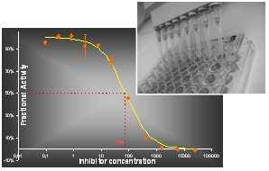

Platform PRECICE® - Nucleotide Metabolism Analysis
NOVOCIB has developed PRECICE®, a unique platform specially dedicated to the exploration of nucleotide metabolism, the production of recombinant enzymes and the development of innovative enzymatic assays.
NOVOCIB has developed PRECICE®, a unique platform specially dedicated to the exploration of nucleotide metabolism, the production of recombinant enzymes and the development of innovative enzymatic assays.
|
|

|
Platform
PRECICE® |

|
|  |
|
PRECICE® can provide precious information for the Drug Discovery industry, for instance by revealing through metabolic profiles the significant changes due to the effect of a drug. To highlight the most relevant information when treating metabolic profiles, we also can perform Multivariable Analysis Studies for sub-population typology as a complementary services.